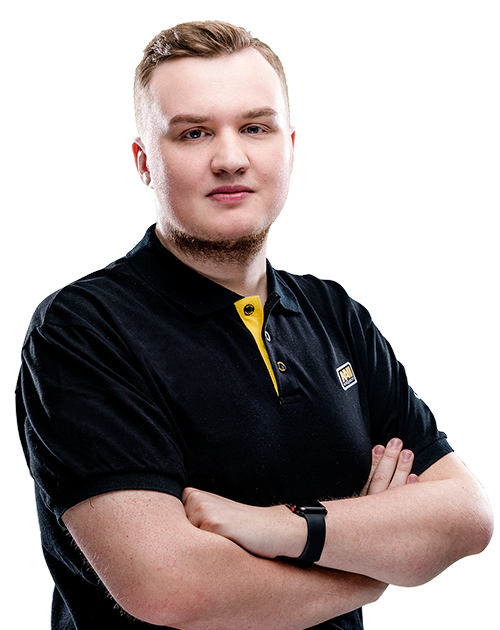

Егор Васильев (род. 5 апреля 1997) — профессиональный российский киберспортсмен в дисциплине Counter-Strike: Global Offensive, также известный как «flamie». Является одним из самых молодых игроков российской профессиональной сцены по CS:GO.[1] Чемпион ESL One: Cologne 2018 в составе команды Natus Vincere.[
Начало карьеры Егора началось еще в игре Counter-Strike: Source. Он участвовал в таких коллективах как PinCho, TEAM46, t44 и zNation. После того как перешел в CS:GO, начал играть в команде USSR Team. В отличие от большинства игроков команды Natus Vincere, он редко менял коллективы, так он сменил 4 команды за 5 лет. Был в составе таких команд как HellRaisers и dAT Team. В последней раскрывается потенциал игрока, этому помог тренер Андрей «B1ad3» Городенский. Игроком заинтересовалась организация Natus Vincere.[1]
В команде Natus Vincere Егор занял позицию стрелка и второго AWP. Добился мирового признания, заняв 14 место в топе 20 игроков по версии hltv.org в 2015 году[3], и 12 место в 2016 году[4]. Второе место на FACEIT Major: London 2018, и победы на ESL One Cologne 2018[5] и ESL One New York 2016[6]